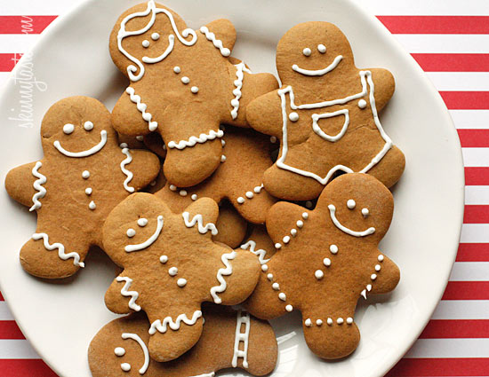

Gingerbread Cookies
Ingredients
- ½ cup unsalted butter at room temperature
- ¾ cup packed dark brown sugar
- ½ cup fancy molasses
- 2 large eggs at room temperature
- 3 ¼ cup all-purpose flour
- 1 tbsp ground ginger
- ½ tsp ground cinnamon
- ½ tsp ground allspice
- ½ tsp baking powder
- ½ tsp baking soda
- ½ tsp salt
Directions
- Beat the butter, brown sugar and molasses together until light and fluffy.
- Add the eggs, beating well after each addition.
- In a separate bowl, sift the flour, ginger, cinnamon, allspice, baking powder, baking soda and salt.
- Add this to the butter mixture and stir until blended.
- Shape the dough into 2 disks, wrap and chill for about an hour up to 2 days (the dough will still be soft, even once chilled).
- Preheat the oven to 350 F and line 2-3 baking trays with parchment paper.
- On a lightly floured surface, roll out the first disk of dough until just over 1/8-inch thick.
- Use a cookie cutter of your choosing to cut out cookie shapes and lift then carefully to the prepared trays, leaving about ½-inch between them.
- Continue with the second piece of dough – any scraps can be stored chilled and then re-rolled until it has all been used.
- Bake the cookies for 15-18 minutes until you see them brown a little just around the edges.
- Let the cookies cool for a few minutes on the tray before removing to cool completely.
- The cookies will keep for up to 10 days in an airtight container.
Click here for an easy frosting recipe
Credits: Adapted from "Basic Gingerbread Cut-Out Cookies," - Food Network, Courtesy of Anna Olson